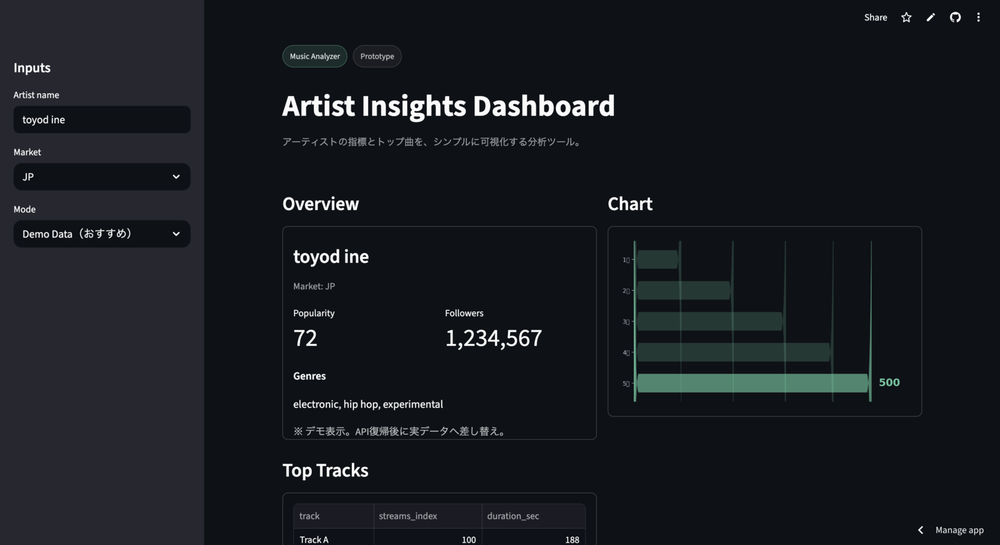

Streamlit
Data Tool
Music Revenue Simulator

Spotify / YouTubeの再生数から収益を推定し、複利・線形の成長モデル比較、目標逆算、到達月・必要成長率を提示。
- 複利 vs 線形成長の達成スピード比較
- 目標月収 → 必要再生数の逆算
- 到達月 / 必要成長率（目安）
- 予測データCSVダウンロード
PythonStreamlitpandasmatplotlib